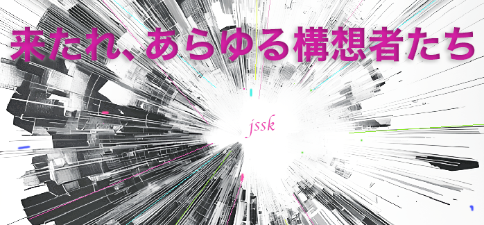

2026年、本会世話人である西京一氏、ならびに、本会設立の発起人である半田智久氏がご逝去されました。
また、2026年3月1日の臨時理事会において、本会については当面の間本格的な活動を休止し、
来るべき再始動の日に備えることが決定されました。
再起動までの期間、学会としては休会いたしますが、土曜サロンをはじめとする研究会活動については継続して参ります。
また、学会誌等の刊行物については、2026年7月中を目処に再公開していく予定となっております。
なお、希望される学会員様につきましては、会費のご返金を行います。
大変お手数ではございますが、desk@jssk.workまでメールにてご連絡いただきますようお願いいたします。
お知らせが大幅に遅れましたことをお詫び申し上げます。